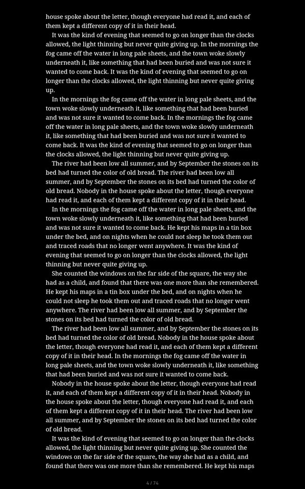
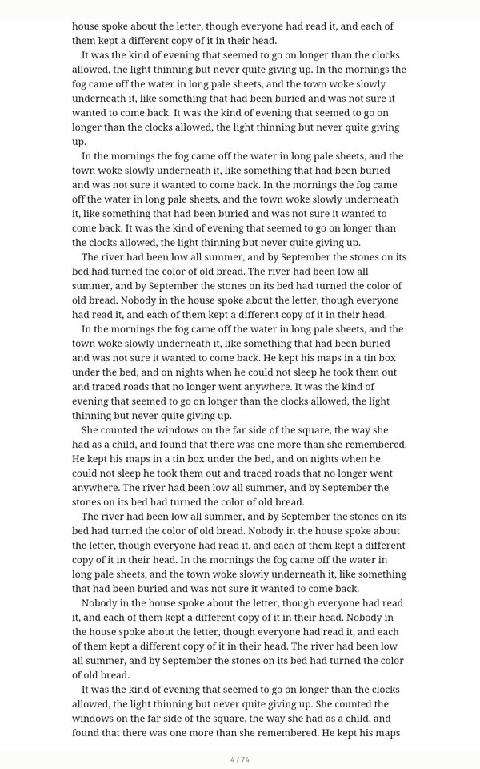
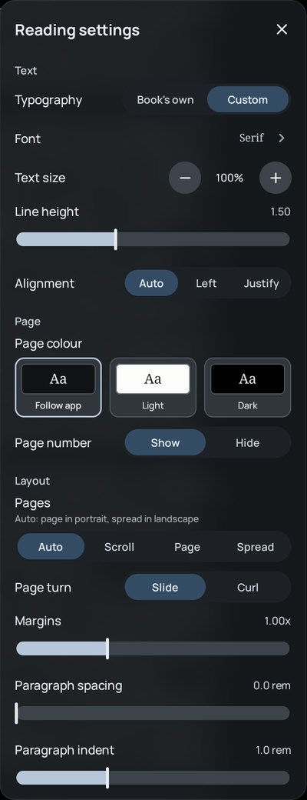
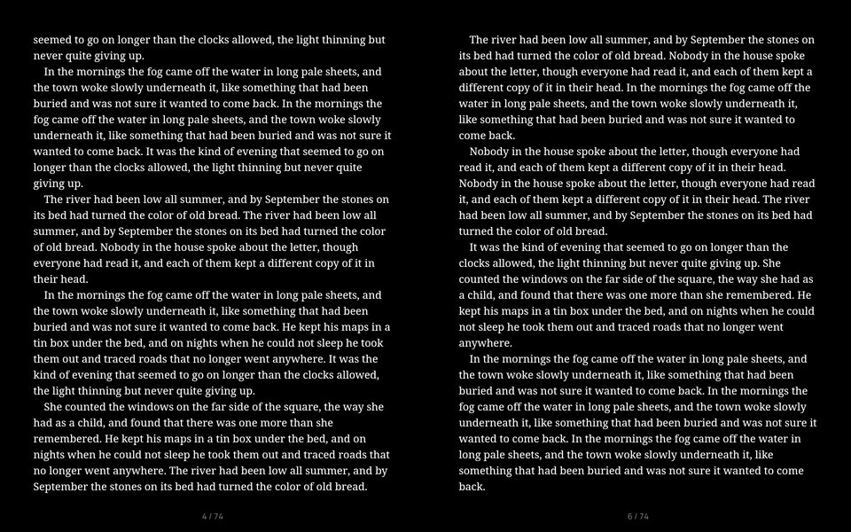

yabai · redesign plan 9.6 · board · 25 October 2026
The reading page
You picked Do for page colours, the page frame and footnotes on the review, and Maybe for a chapter line. Today an EPUB page comes in two colours plus Follow app, the settings read like CSS ("1.50", "1.00x", "0.0 rem"), the light page has a faint band above and below the text, and a footnote opens as an app dialog in the middle of the screen. Card 2 asks what Follow app should mean (A or B); the rest are Do, Maybe or Don't. Pages are drawn at real sizes (1 px = 1 dp, scaled to fit) on the emulator's 800 dp tablet with The Lantern Keepers' text. Picks save to this page.
0 of 8 picked
Picks are kept in this browser until the page's store answers.
What's there today (0.17.1 + 9.4 debug build, emulator, The Lantern Keepers)

Follow app in Graphite gives a black page. The text runs from 32 to 1248 dp of the 1280 dp height, with 120 dp at each side; the number sits in the bottom 32 dp.

Light: the page is #FFFFFF, but the 32 dp strips above and below it are #FCFCFA.

Reading settings: three page colours, and values in CSS units.

Landscape spread: 48 dp strips, 50 dp outer margins.The top of the light page with its contrast raised, so the band shows. On the screen it is a faint off-white stripe.
Page colour is an enum of two (EpubReaderTheme: Light, Dark), passed to Readium as its LIGHT and DARK themes. Readium paints the text area. The reader paints the strips and the back of a turning page from its own constants (epubReaderSurfaceBackground: #FCFCFA, #000000), and the page number from a third pair. On the light page they don't match.
Follow app picks Light or Dark by how bright the app's background is, but its swatch draws the app's background. In Graphite the swatch is #101214 and the page is #000000.
Margins is a multiplier from 0.5× to 2×. On this page it moves the side space from 100 dp to 160 dp (120 at 1×). Paragraph spacing (0–2) and indent (0–3) are in rem; line height runs 1.1–2.2.
No book on the emulator has footnotes, so card 6 draws today's popup from EpubFootnotePopup.kt: a 420 dp AppPanel in the middle of the screen over a 32% black scrim, at most 260 dp tall, the note in Manrope 14 in app colours, titled "Footnote", with a Close button.
1 · Six page colours, drawn in your font
core:ui-theme + reader-epub
Font
The Page section of the panel. Tap a swatch to recolour the page.
The whole page, and a piece of it at real size.
Follow app, Paper, Sepia, Grey, Dusk and Black as 53 × 44 dp tiles with "Aa" at 20 sp in the font you read in, and the name under each. The chosen one gets a 2 dp ring in the accent. Follow app is drawn here as card 2's A.
Each colour is a token in core:ui-theme with four parts: the page, the text, the page number, and a raised surface for the footnote card. Text on page: Paper 15.9:1, Sepia 10.6, Grey 11.3, Dusk 10.1, Black 12.3 (today's Light 18.7, Dark 20.8). The number: 3.4 to 4.1, about today's.
Readium gets the page and text colours directly. The strips, the back of a turning page and the page number take the same token, so the light page loses its band.
A book that saved Light opens on Paper; one that saved Dark opens on Black.
Colour
Page
Text
Number
Raised
2 · What Follow app gives you
pick A or B
A. The page takes the app theme's own background and text colour.
B. Paper on a light theme, Black on a dark one.
A: Blueprint reads navy, Sepia Reading reads sepia, Graphite reads its own #101214 with its own text colour. The swatch shows exactly the page you'll get. System Dynamic follows the wallpaper. The number and the footnote card are mixed from the theme's two colours.
B: today's rule with the new colours. The swatch then shows Paper or Black, not the app's background, so it matches the page.
Either way, picking Paper to Black in a book keeps that colour for that book, as today.
3 · Settings in words a reader uses
EpubReaderPreferencesPane
TodayProposed
Narrow, Normal and Wide on this page: 100, 120 and 160 dp at the sides.
Line height stays a slider, labelled "1.5×", and moves in tenths from 1.1× to 2.2×.
Paragraph spacing: None, Small, Medium, Large (0, 0.5, 1, 1.5 rem; today's slider goes to 2).
Paragraph indent: None, Small, Medium, Large (0, 1, 2, 3 em; today's default of 1 is Small).
Each row of steps sits under its label in an AppSegmentedRow, as Pages does. A value saved between steps snaps to the nearest one. Text size keeps its stepper and "100%".
4 · The same space above the text as below it
reader-epub
Portrait: today 32 dp strips; proposed 56 dp, the number centred in the bottom one.
A spread: today 48 dp; proposed 56 dp.
Today the first line sits 32 dp from the top of the page while the sides get 120 dp, so a page reads tall and crowded at the top. The number has 31 dp of space above it and 12 dp below.
Proposed: a 56 dp strip above the text and one below on tablets, in portrait and on spreads, and 40 dp on phones. The number is centred in the bottom strip, and both strips are the page colour.
The text area then has the same top and bottom by construction. Under the last line there can still be up to one line of space, where the text doesn't fill the page exactly.
Cost at 100% text: 48 lines a page instead of 50 in portrait, and 28 instead of 29 on each page of a spread.
5 · The chapter's title in the top strip
Maybe on the review
The top of a portrait page at real size.
A spread: the book over the left page, the chapter over the right.
12 sp Manrope in the page number's colour, centred in the top strip, on one line, cut with "…" when long. No clock or battery, as decided for the page number.
Not on a chapter's first page, which has the chapter's own heading.
It shows and hides with the page number; that setting becomes "Page number and chapter".
Without it, the top strip stays empty and the page is the same.
6 · Footnotes in the book's own look
EpubFootnotePopup
Today, drawn from the code, on Follow app in Graphite; proposed on Paper and on Black. The note is an example: no emulator book has notes.
The proposed card at real size, on Paper.
A card that rises from the bottom of the page, as the kit's sheets do: up to 560 dp wide and 45% of the page tall, with 28 dp top corners and the kit's handle. It is the page's raised colour, with a soft shadow on light pages.
The note is set in the book's font, size and line height, in the page's text colour. Above it is "Note 12" (the note's mark) in the page number's style. A long note scrolls inside the card.
Tap the page, swipe the card down or press Back to close it. There's no Close button; TalkBack gets a Dismiss action.
The page behind stays readable: a 12% scrim of the text colour instead of today's 32% black.
7 · "Go to note" for notes at the back of the book
reader-epub
The card for an endnote, then the Notes page it opens, with the way back.
When the note lives in another file of the book (a Notes chapter at the end), the card ends with "Go to note", a quiet pill in the page's colours, which opens the Notes page at that note and marks it for a moment.
A toast "Back to page 4" (9.2's, above the page number) offers Back for 6 s. The system Back also returns there, as long as you're still on the note's page.
A note in the same file as the text, which is most footnotes, shows only the card.
8 · On a phone
412 dp
The settings sheet's Page tab, and a footnote. Drawn, not captured: the phone's side margins are approximate.
The six swatches fit one row in the sheet (55 dp each at 412 dp).
The footnote card spans the screen's width, with the same corners, handle and colours.